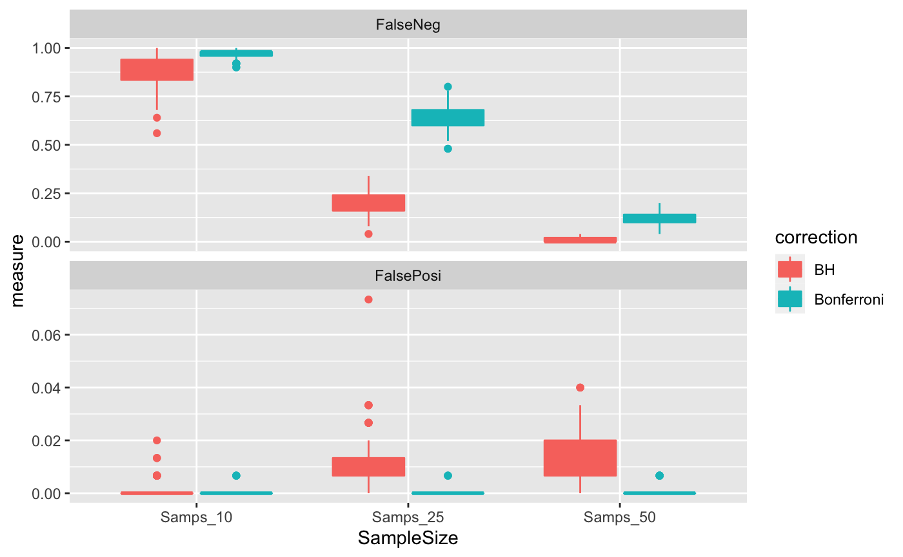

vignettes/docs/MHTcorrection.Rmd
MHTcorrection.RmdIn this module, we show how testing for multiple hypotheses (genes) can increase the chance of false positives, especially for small sample sizes.
In the remainder of this module we will explore the effects of multiple hypothesis corrections on family-wise error rate, false positive rate, false negative rate, and power when using Bonferroni and Benjamini Hochberg corrections.
The following function is just a wrapper for runnning two-sample t-tests.
## wrapper function extracting t-statistic and p-value from a call to function t.test
tscore <- function(y,x) {
tmp <- t.test(y~x)
c(score=tmp$statistic,pval=tmp$p.value)
}The next function is a wrapper to define a data matrix, X, and outcome vector, Y, for different conditions. By default we can generate a complete set of data from the null hypthesis to check the FWER. We can also generate data with a subset of features which have different means between groups to check, false positive rate, false negative rate, and power by changing propDiff and Diff.
wrapDA <- function(Nsamps, # Number of samples per pseudogroup
Nrow = 200, # Number of parameters
mean = 0, # Mean of normal
sd = 0.5, # SD of normal
alpha = 0.05, # Signficance threshold
propDiff = 0, # Proportion to make Ha
Diff = 0, # Difference for Ha features
reportAll = FALSE
)
{
# Genreate a data of random data from null distribution
DAT <- matrix( rnorm( Nrow * Nsamps * 2, mean=0, sd=0.5), nrow=Nrow, ncol=( Nsamps *2) )
# Add difference to one group
if(propDiff > 0){
nChange <- floor(propDiff*Nrow)
DAT[1:(nChange), 1:Nsamps] <- DAT[1:(nChange), 1:Nsamps] + Diff
rownames(DAT) <- paste0(c(rep("Ha", nChange), rep("H0", (Nrow - nChange))), 1:Nrow)
}
## generate a (head/tail) phenotype of proper size
pheno <- factor(rep(c('head','tail'),each=Nsamps))
## perform t.test on each data row with respect to the random phenotype
DIF <- as.data.frame(t(apply(DAT,1,tscore,x=pheno)))
## Sort by p-value
DIF <- DIF[order(DIF$pval),]
## Perform Bonferroni and BH corrections
DIF$BFp <- p.adjust(DIF$pval, method = "bonferroni")
DIF$BHp <- p.adjust(DIF$pval, method = "BH")
## Get BH Significant Rows
DIFsig <- DIF[DIF$BHp < alpha,]
## Return All results or only features with small p-values
if(reportAll){
return(DIF)
} else {
## If any genes BH significant return these rows else just return row with smallest p-value
if(nrow(DIFsig)>0) return(DIFsig) else return(DIF[1,])
}
} First, we will check the FWER between Bonferroni and BH corrections for two different sample sizes: 10 samples per group and 50 samples per group. Each feature will have mean=0 and SD=0.5. For each run, the result will either be the feature with the smallest p-value, or a data.frame of features that passed BH significance threshold.
sGroups <- c(10, 25, 50) # Vector of group sizes
# Run simulation for each sample size 100 times
outList <- lapply(sGroups, function(Nsamps){
replicate(100, wrapDA(Nsamps), simplify = FALSE)
})
# Name list by sample size
names(outList) <- paste("Samps", sGroups, sep = "_")
# What does the output look like?
outList$Samps_10[[1]]## score.t pval BFp BHp
## 185 -4.477631 0.0002993474 0.05986947 0.05986947getFWER <- function(resList, # List of lowest p-values
alpha = 0.05, # P-value threshold
pCol = "BFp" # Column with MHT P-value of interest
)
{
## Which experiments had at least one positive hit?
FWERvec <- unlist(lapply(resList, function(y) sum(y[,"BFp"] < alpha)>0))
## What proportion of experiments had at least one positive hit?
FWERval <- mean(FWERvec)
## Return FWER for this set of experiments
return(FWERval)
}## Get FWER for bonferonni corrected p-values
BonVec <- unlist(lapply(outList, getFWER, alpha = 0.05, pCol = "BFp")) # Note pCol
print(BonVec)## Samps_10 Samps_25 Samps_50
## 0.06 0.08 0.07## Get FWER for Benjamini-Hochberg corrected p-values
BhVec <- unlist(lapply(outList, getFWER, alpha = 0.05, pCol = "BHp")) # Note pCol
print(BhVec)## Samps_10 Samps_25 Samps_50
## 0.06 0.08 0.07Note, for repeated experiments with multiple hypotheses the FWER returned from Bonferroni and Benjamini-Hochberg is the same
Next, we will create data where 25% of the genes differ between groups by 0.5. In the output, true positive will have row names starting with “Ha”.
haList <- lapply(sGroups, function(Nsamps){
replicate(100, wrapDA(Nsamps, propDiff = 0.25, Diff = 0.5), simplify = FALSE)
})
## Name list by sample size
names(haList) <- paste("Samps", sGroups, sep = "_")
## What does the output look like?
haList$Samps_10[[1]]## score.t pval BFp BHp
## Ha27 6.102593 9.367465e-06 0.001873493 0.001873493
## Ha30 5.355881 5.922261e-05 0.011844522 0.005922261
## Ha29 4.693650 2.068936e-04 0.041378726 0.011369955
## Ha15 4.876862 2.273991e-04 0.045479818 0.011369955
## Ha45 4.171281 5.739726e-04 0.114794515 0.020704197
## Ha22 4.142938 6.211259e-04 0.124225182 0.020704197
## Ha2 4.047819 7.614228e-04 0.152284551 0.021754936
## Ha21 3.951397 1.026725e-03 0.205345045 0.025668131
## Ha9 3.955238 1.262681e-03 0.252536233 0.028059581
## Ha10 3.668688 1.758112e-03 0.351622443 0.035162244The rows with the prefix, Ha, come from the distribution for which the alternative hypthesis is true.
The a false positive rate will be calculated for each experiment individually
getFPR_FNR <- function(resList, # List of lowest p-values
alpha = 0.05, # P-value threshold
pCol = "BFp", # Column with MHT P-value of interest
nMH = 200, # Number of hypothesis tested
nHa = 50 # Number of true positives
)
{
## Extract instances of null hypotheses with small p-values from each experiment
H0list <- lapply(resList, function(y) y[!grepl("Ha", rownames(y)),])
# Extract vector of false postive rates from each experiment
FPvec <- unlist(lapply(H0list, function(y) sum(y[,pCol]<alpha)/(nMH-nHa)))
# Extract instances of alternative hypotheses with small p-values from each experiment
Halist <- lapply(resList, function(y) y[grepl("Ha", rownames(y)),])
# Extract vector of false negative rates from each experiment
FNvec <- 1 - unlist(lapply(Halist, function(y) sum(y[,pCol]<alpha)/(nHa)))
# Create data.frame of results
FP_FN <- data.frame(FalsePosi = FPvec, FalseNeg = FNvec)
return(FP_FN)
}## Get FP and FN
BonFP_FN <- lapply(haList, getFPR_FNR, alpha = 0.05, pCol = "BFp", nMH = 200, nHa = 50)
## Concatenate the results for each sample size
BonFP_FN <- do.call(rbind, BonFP_FN)
head(BonFP_FN)## FalsePosi FalseNeg
## Samps_10.1 0 0.92
## Samps_10.2 0 0.94
## Samps_10.3 0 0.98
## Samps_10.4 0 1.00
## Samps_10.5 0 0.98
## Samps_10.6 0 0.96## Add column for sample size identifier
BonFP_FN$SampleSize <- sub("[.][[:digit:]]*", "", rownames(BonFP_FN))
head(BonFP_FN)## FalsePosi FalseNeg SampleSize
## Samps_10.1 0 0.92 Samps_10
## Samps_10.2 0 0.94 Samps_10
## Samps_10.3 0 0.98 Samps_10
## Samps_10.4 0 1.00 Samps_10
## Samps_10.5 0 0.98 Samps_10
## Samps_10.6 0 0.96 Samps_10## Get FP and FN
BhFP_FN <- lapply(haList, getFPR_FNR, alpha = 0.05, pCol = "BHp", nMH = 200, nHa = 50)
## Concatenate the results for each sample size
BhFP_FN <- do.call(rbind, BhFP_FN)
head(BhFP_FN)## FalsePosi FalseNeg
## Samps_10.1 0.000000000 0.80
## Samps_10.2 0.006666667 0.64
## Samps_10.3 0.000000000 0.82
## Samps_10.4 0.000000000 1.00
## Samps_10.5 0.000000000 0.86
## Samps_10.6 0.013333333 0.84## Add column for sample size identifier
BhFP_FN$SampleSize <- sub("[.][[:digit:]]*", "", rownames(BhFP_FN))
head(BhFP_FN)## FalsePosi FalseNeg SampleSize
## Samps_10.1 0.000000000 0.80 Samps_10
## Samps_10.2 0.006666667 0.64 Samps_10
## Samps_10.3 0.000000000 0.82 Samps_10
## Samps_10.4 0.000000000 1.00 Samps_10
## Samps_10.5 0.000000000 0.86 Samps_10
## Samps_10.6 0.013333333 0.84 Samps_10We will create boxplots of the results with ggplot2.
## Concatenate results between Bonferroni and Benjamini-Hochberg
FP_FN <- rbind(BonFP_FN, BhFP_FN)
FP_FN$correction <- rep(c("Bonferroni", "BH"), each = nrow(BonFP_FN)) # Add correction type
head(FP_FN)## FalsePosi FalseNeg SampleSize correction
## Samps_10.1 0 0.92 Samps_10 Bonferroni
## Samps_10.2 0 0.94 Samps_10 Bonferroni
## Samps_10.3 0 0.98 Samps_10 Bonferroni
## Samps_10.4 0 1.00 Samps_10 Bonferroni
## Samps_10.5 0 0.98 Samps_10 Bonferroni
## Samps_10.6 0 0.96 Samps_10 Bonferroni## Create one column of False Positive and False Negative Rates
FP_FN <- gather(FP_FN, key = "statistic", value = "measure", 1:2)
head(FP_FN)## SampleSize correction statistic measure
## 1 Samps_10 Bonferroni FalsePosi 0
## 2 Samps_10 Bonferroni FalsePosi 0
## 3 Samps_10 Bonferroni FalsePosi 0
## 4 Samps_10 Bonferroni FalsePosi 0
## 5 Samps_10 Bonferroni FalsePosi 0
## 6 Samps_10 Bonferroni FalsePosi 0# Create plot of results
ggplot(FP_FN, aes(x = SampleSize,
y = measure,
fill = correction,
colour = correction)) +
geom_boxplot() +
facet_wrap(~statistic, nrow = 2, scales = "free_y")
What do you notice about the nature of the performance of the FWER-based Bonferroni correction, and FDR-based Benjamini-Hochberg correction.